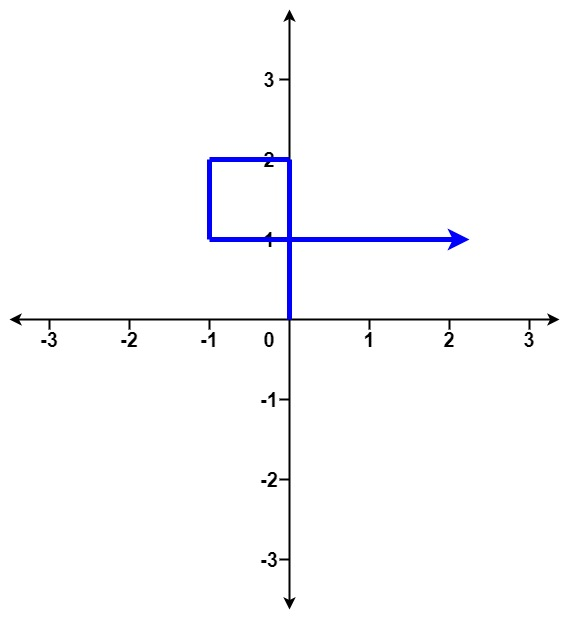
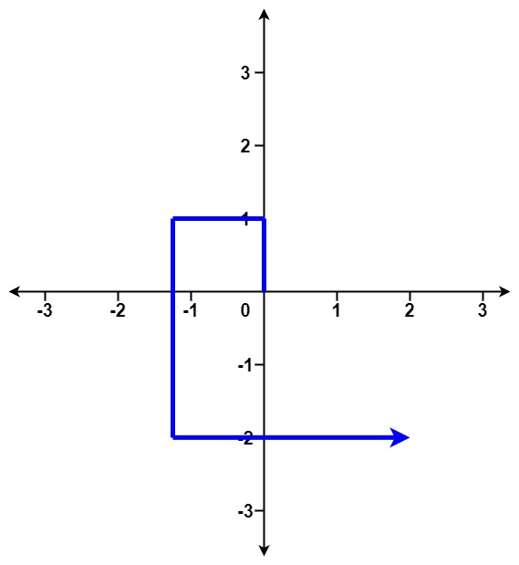
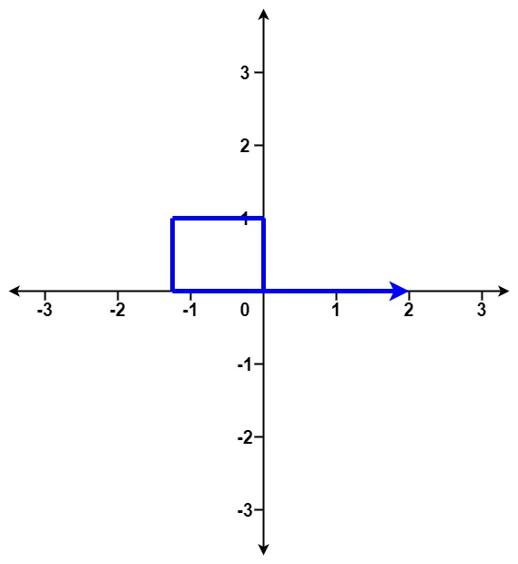

335. 路径交叉
不相交的路径必是「逆时针螺旋」（先外扩后内收），新边只可能撞上倒数第 3、4、5 条边，三种模式逐条判。
思路
- 方向按北→西→南→东逆时针循环：不相交时路径是一条螺旋，包围盒先单调外扩、再单调内收，所以老边不可能被隔很多步的新边撞上。
- 三种命中模式（
i从 3 起）：①x[i]≥x[i−2] 且 x[i−1]≤x[i−3]，新边横穿倒数第 3 条边；② 倒数第 1、3 条边等长（共线）且x[i]+x[i−4]≥x[i−2]，新边贴回倒数第 4 条边；③ 卷回一圈撞倒数第 5 条边，四个不等式见代码。 - 三个模式都不中就继续走，全程 O(n)；步长可达
10^5、边数10^5，不能真的画路径。 - 相交包含「端点相碰」：回到起点也算（题面示例
[1,1,1,1]）。
图解
最优解
1class Solution {2 public boolean isSelfCrossing(int[] distance) {3 // 不相交的路径是一条「逆时针螺旋」：要么一直外扩，要么从某步起一直内收。4 // 所以新边只可能撞上倒数第 3、4、5 条边，三种几何模式逐个判一遍即可。5 for (int i = 3; i < distance.length; i++) {6 // 模式一：新边横穿倒数第 3 条边（内收时最常见，如 [2,1,1,2]）7 if (distance[i] >= distance[i - 2] && distance[i - 1] <= distance[i - 3]) return true;8 // 模式二：新边与倒数第 4 条边共线相碰（如 [1,1,2,1,1] 末边回到起点）9 if (i >= 4 && distance[i - 1] == distance[i - 3] && distance[i] + distance[i - 4] >= distance[i - 2]) return true;10 // 模式三：卷了一圈，新边撞回倒数第 5 条边（如 [1,1,2,2,1,1]）11 if (i >= 5 && distance[i - 2] >= distance[i - 4] && distance[i] + distance[i - 4] >= distance[i - 2]12 && distance[i - 1] + distance[i - 5] >= distance[i - 3] && distance[i - 1] <= distance[i - 3]) return true;13 }14 return false;15 }16}题目
给你一个整数数组 distance 。
从 X-Y 平面上的点 (0,0) 开始，先向北移动 distance[0] 米，然后向西移动 distance[1] 米，向南移动 distance[2] 米，向东移动 distance[3] 米，持续移动。也就是说，每次移动后你的方位会发生逆时针变化。
判断你所经过的路径是否相交。如果相交，返回 true ；否则，返回 false 。
示例 1：

输入：distance = [2,1,1,2] 输出：true
示例 2：

输入：distance = [1,2,3,4] 输出：false
示例 3：

输入：distance = [1,1,1,1] 输出：true
提示：
1 <= distance.length <= 1051 <= distance[i] <= 105
题面取自力扣当前版本。
数据快照 2026-11-04。题面版权归力扣所有，本站点仅供本人学习使用，请勿对外发布。